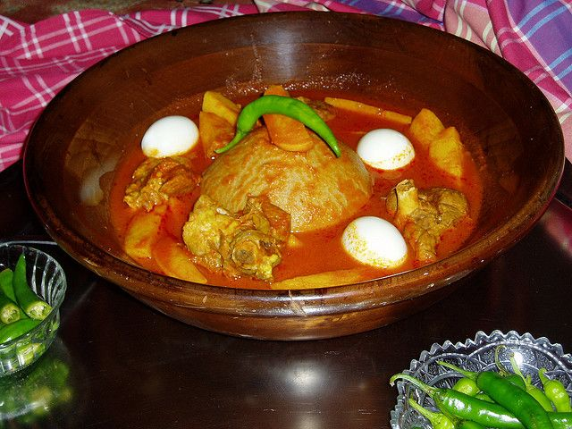

Bazin

Description
Bazin is a traditional Libyan dish made from barley flour, water, and salt.
The dough is cooked to a thick consistency and formed into a round shape.
It is often served with a rich tomato-based sauce, potatoes, boiled eggs, and lamb or goat meat.
This dish is typically enjoyed as a communal meal, where family and friends gather around to eat together.
Ingredients
- 2 cups barley flour
- 1 teaspoon salt
- Water (enough to form a dough)
- 1/2 pound lamb or goat meat, cut into chunks
- 2 tablespoons olive oil
- 1 large onion, finely chopped
- 3 garlic cloves, minced
- 2 tablespoons tomato paste
- 4 cups water or broth
- 2 potatoes, peeled and cut into chunks
- 2 hard-boiled eggs
- 1 teaspoon turmeric
- 1 teaspoon ground cumin
- Salt and pepper to taste
Steps
- In a large pot, bring salted water to a boil. Gradually add the barley flour, stirring constantly to avoid lumps. Cook until the mixture thickens and forms a dough.
- Shape the dough into a round, dome-like form and place it in the center of a large serving platter.
- In a separate pot, heat olive oil and brown the meat. Add the chopped onion and garlic, cooking until softened.
- Stir in the tomato paste, turmeric, cumin, salt, and pepper. Add water or broth and bring to a boil.
- Add the potatoes to the pot and cook until they are tender and the meat is cooked through.
- Place the cooked meat and potatoes around the Bazin on the serving platter. Pour the sauce over the dish and garnish with the hard-boiled eggs.
- Serve hot and enjoy with family and friends.